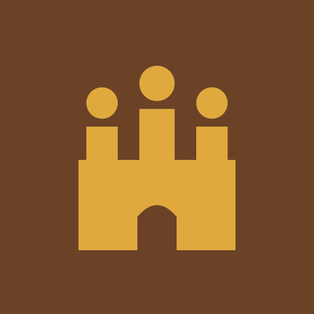
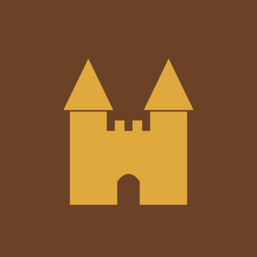
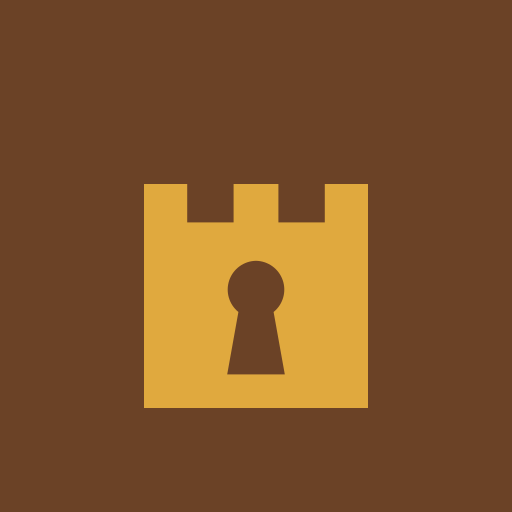
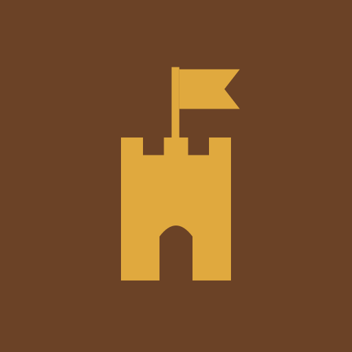
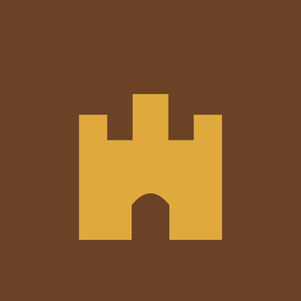
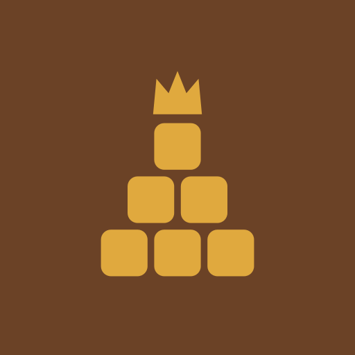

One colour, one square image each, in the site colours (brand brown and gold). The same file is used for the X avatar, the token and the favicon. Under each: how it sits in the site header.

Agentdom
01 · Agent WallA castle wall whose battlements are three agents, the middle one taller: the crown and the castle in one.
Agentdom
02 · Agent CrownThree agents standing shoulder to shoulder, the middle one taller: together they form a crown.

Agentdom
03 · Twin TowersTwo pointed towers guarding an open gate: the realm, drawn like a storybook castle.
Agentdom
04 · Gate AgentAn agent standing in the palace archway, ready to take your order.

Agentdom
05 · Keyhole KeepA castle keep with a keyhole door: your work stays locked inside the realm until you open it.

Agentdom
06 · Flag TowerOne tower flying the realm flag: the place your agents report to.
Agentdom
07 · Crest of AgentsThe royal crest with three agents cut into it, the middle one taller, like the court on a coat of arms.

Agentdom
08 · CastleA castle whose battlements form a crown, with the gate open: come in, the realm is working.
Agentdom
09 · Castle BubbleA chat bubble with battlements on top: you talk, the castle answers.

Agentdom
10 · Building BlocksSix blocks stacked into a pyramid with a crown on top: a kingdom built piece by piece, by agents.